Test Setup
- The model trained on the View of Delft dataset is deployed on an NVIDIA Jetson-powered radar–camera test rig for real-time road user detection.
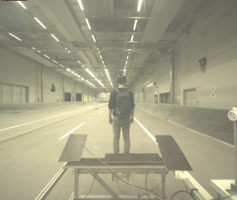

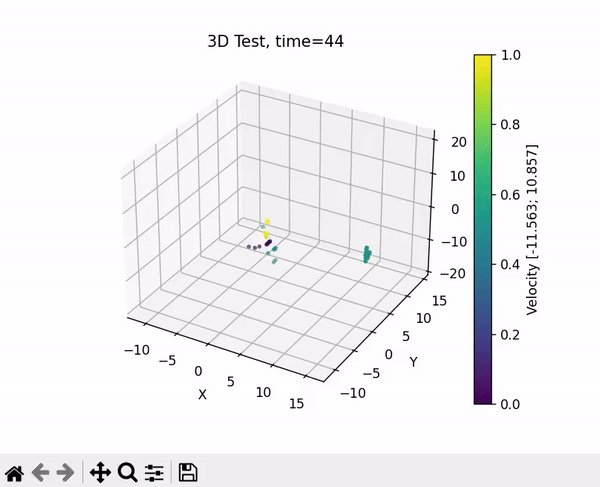
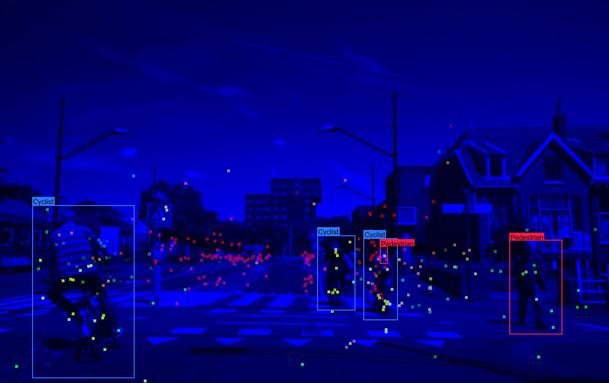
All variants benchmarked against RGB-only Tiny YOLOv7 across four simulated conditions — clear, light fog, medium fog, strong fog — per class (car, pedestrian, cyclist, truck).
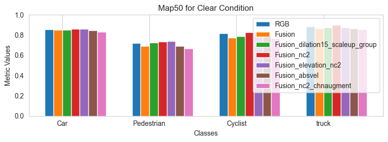
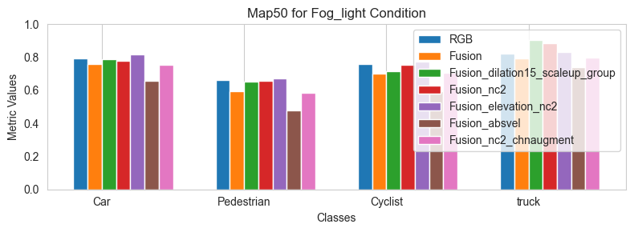
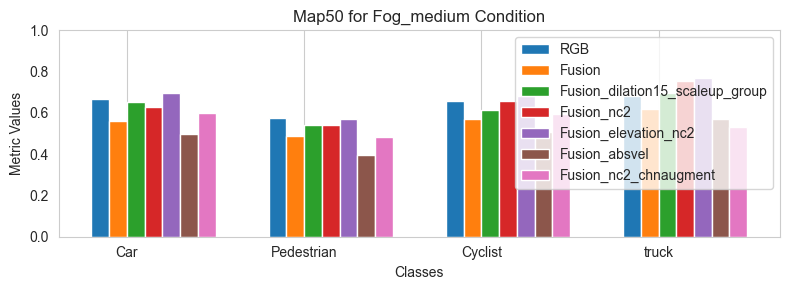
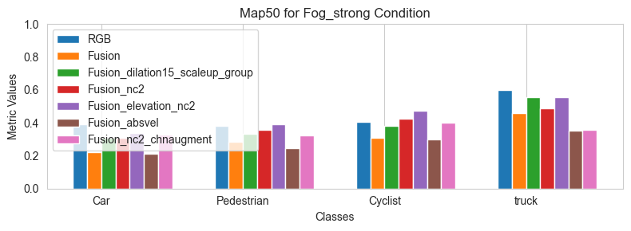
Best-performing setup — 1 RGB channel + 1 radar-distance channel, with elevation augmentation — tracked against the RGB-only baseline across all four conditions:
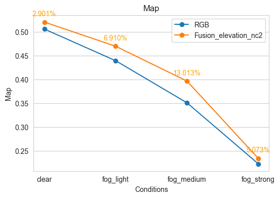
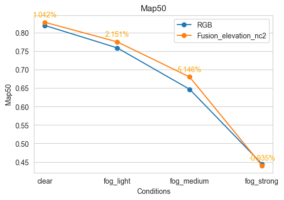
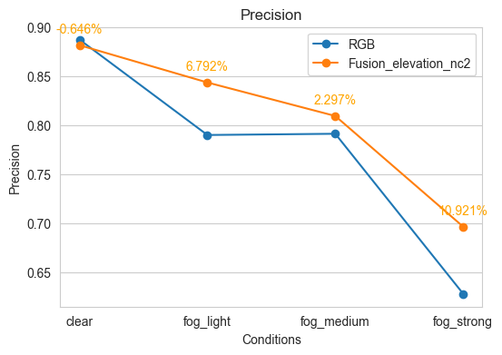
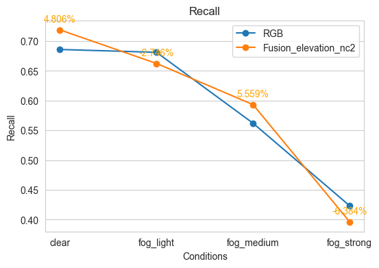

